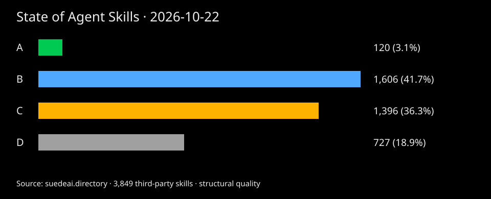

State of Agent Skills
120 of 3,849 third-party agent skills earn an A (3.1%). Every grade comes from the published files and the same 0–99 rubric.
Quality snapshot: . Install snapshot: 2026-11-22. This is the directory’s listed sample, not a census of all agent skills. Suede’s own skills are excluded from every figure and ranking in this report.
How the grades fall

| Grade | Skills | Share |
|---|---|---|
| A | 120 | 3.1% |
| B | 1,606 | 41.7% |
| C | 1,396 | 36.3% |
| D | 727 | 18.9% |
Download chart (SVG) · Download grade data (CSV) · Report data (JSON)

Where skills leave points on the table
| Score component | Skills below maximum | Total unearned points |
|---|---|---|
| Curated-list citations | 3,630 | 17,763 |
| Boundary clause | 3,337 | 13,348 |
| Structural checks | 1,298 | 10,384 |
| Example request | 2,892 | 8,676 |
| Compatibility declared | 3,321 | 6,642 |
| Tool permissions declared | 3,291 | 6,582 |
| Bundled scripts | 3,187 | 6,374 |
| Reference files | 2,029 | 6,087 |
| Instruction depth | 1,057 | 4,479 |
| Recent maintenance | 826 | 4,366 |
| Description length | 1,273 | 3,651 |
Unearned rubric points are opportunities to improve the published assessment. They are not evidence that a skill fails at its task. Check your own skill.
Popularity and quality answer different questions
The ten most installed skills and the ten highest-scoring skills share 0 entries. Equal quality scores are ordered by listing ID, so this overlap depends on the stated tie-break. Install counts come from skills.sh; missing counts are not zero.
Most installed
| Skill | Quality score | Recorded installs |
|---|---|---|
| find-skills | 81/100 · B | 4,476,139 |
| hyperframes-cli | 77/100 · C | 1,661,450 |
| hyperframes | 80/100 · B | 1,626,685 |
| grill-me | 59/100 · D | 1,589,901 |
| agent-browser | 75/100 · C | 1,566,401 |
| media-use | 80/100 · B | 1,535,069 |
| hyperframes-registry | 78/100 · C | 1,407,142 |
| grill-with-docs | 61/100 · D | 1,357,159 |
| improve-codebase-architecture | 68/100 · D | 1,293,907 |
| tdd | 79/100 · C | 1,266,818 |
Highest scores
| Skill | Quality score | Recorded installs |
|---|---|---|
| go-api-design | 95/100 · A | 241 |
| go-ci | 95/100 · A | 137 |
| go-cli | 95/100 · A | 131 |
| go-coding-standards | 95/100 · A | 252 |
| go-concurrency-review | 95/100 · A | 253 |
| go-context | 95/100 · A | 204 |
| go-data-structures | 95/100 · A | 132 |
| go-database | 95/100 · A | 217 |
| go-design-patterns | 95/100 · A | 191 |
| go-documentation | 95/100 · A | 131 |
Licenses and service requirements
| Cost and license lane | Skills |
|---|---|
| Free and open source | 3,425 |
| Free skill, needs a service | 317 |
| Non-commercial license | 80 |
| Restricted license | 27 |
Cost lanes use recorded license and installation evidence. Compact assessments may not include a full service-dependency review; always check the publisher’s terms.
The largest categories
| Category | Skills |
|---|---|
| ai agents llm | 603 |
| developer tools | 545 |
| devops cloud | 360 |
| marketing seo | 313 |
| product management | 237 |
| media creative | 236 |
| productivity knowledge | 236 |
| science research | 210 |
| frontend design | 198 |
| testing qa | 190 |
| data databases | 178 |
| business finance | 166 |
| security | 115 |
| writing content | 114 |
| code review quality | 93 |
| documents office | 55 |
Read the evidence
Published grading rubric · Open index and per-skill reports · Find skills inside your agent
Scores measure structure, documentation, bundled files, maintenance and curated-list citations. No third-party code was executed; no runtime or security results are inferred.
Questions and answers
What share of agent skills earn an A?
120 of 3,849 third-party listed skills (3.1%) score 90 or more and earn an A in the 2026-10-22 snapshot. 1,726 (44.8%) score 80 or more, the level that earns the README quality badges.
What does the grade measure?
The Suede Skill Check reads the published files: SKILL.md structure and frontmatter, description quality, instruction depth, bundled reference files and scripts, a declared license, recent maintenance and curated-list citations. The score runs from 0 to 99. It describes how complete and well documented a skill is, not how it performs at runtime.
Where do skills lose the most points?
The curated-list citations component accounts for the most unearned points: 3,630 skills sit below its maximum, 17,763 points in total. Each listing names its own open points by component, and the free skill check lists the largest ones a publisher controls.
Where do the install counts come from?
From skills.sh, which publishes install counts for skills added with its CLI. The directory measures no installs of its own. The install snapshot used here was read on 2026-11-22; a skill without a recorded count is shown as not recorded, not as zero.
How many agent skills are free and open source?
3,425 of 3,849 third-party listed skills (89.0%) use an open-source or open-content license and name no paid service. Every listed skill is free to download from its public repository.
Why are Suede skills left out of the figures?
Suede publishes the directory, so its own skills are excluded from every figure and ranking in this report to keep the comparison about third-party publishers.
Star Suede Skills on GitHub
Free, graded agent skills for Claude Code, Codex and Cursor. Every star puts them in front of more builders.